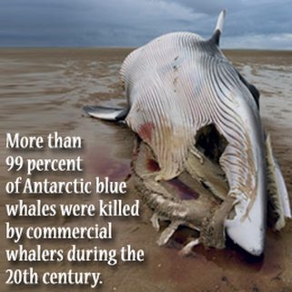
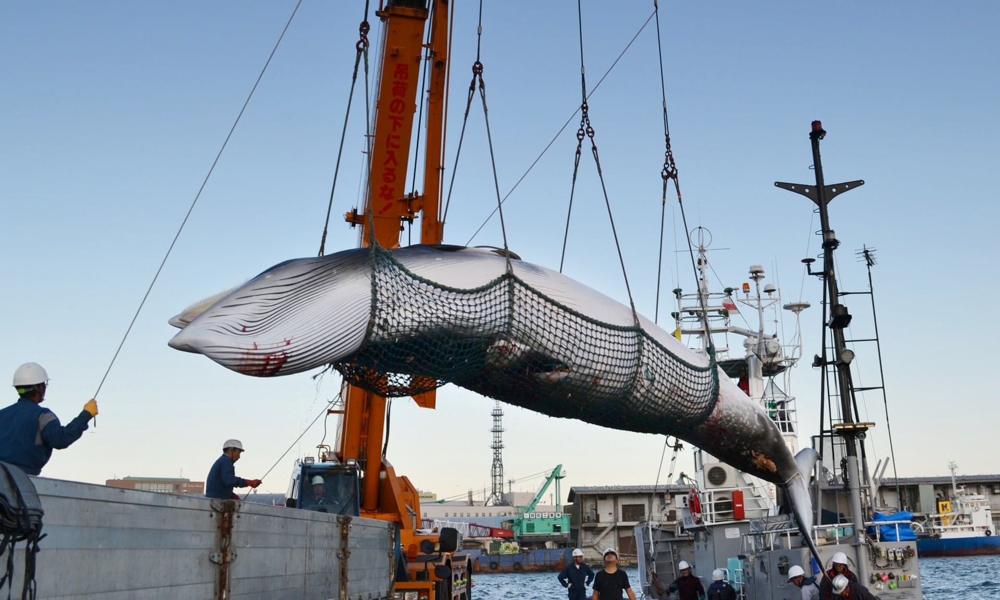

Over a thousand whales are killed every year because some people want to make money from selling their meat and body parts. Their oil, blubber and cartilage are used in pharmaceuticals and health supplements. Whale meat is even
used in pet food, or served to tourists as a ‘traditional dish’. Exploiting the bodies of whales for money is illegal in most countries
Whaling is the process of hunting of whales for their usable products such as meat and blubber, which can be turned into a type of oil which became increasingly important in the Industrial Revolution.
It was practiced as an organized industry as early as 875 AD.
Commercial whaling was banned in 1986. However, Japan, Norway, and Iceland have killed nearly 40,000 large whales since then. Over 100,000 dolphins, small whales, and porpoises are also killed in various countries each year.
Consequnces of Whaling

Consequences from over-whaling include increased carbon dioxide, which contributes to global warming and leads to melting of the polar ice caps and changes in the eating habits of many marine animals. Phytoplankton is also a main food source
for many species and is important for fish to be healthy and thriving. Whaling is a cruel and unnecessary activity that must be stopped. Commercial whaling is banned, trade in whale products is forbidden and demand for whale meat is falling. Yet, every year Japan, Norway and Iceland still kill around 1,500 whales.
The major disadvantages of whaling include the potential extinction of some whale species, the unsafe levels of mercury that whale meat can contain and the potential harm to ecosystems that removing whales can cause.
10 Reasons why we should not kill Whales!

We don’t know how well whales are recovering, because we don’t know how many there once were or ‘should be’.
We are still learning about whales. Amazingly ‘new’ species like the dwarf pygmy whale, Omura’s whale, and species of beaked whale have only been discovered in the last few decades.
We now know that some whales have and teach forms of ‘culture’ to their calves, including humpbacks’ songs and orcas’ feeding strategies. Whaling could have more impact on populations than sheer numbers.
Whales are necessary for healthy oceans, mixing, distributing nutrients and helping deal with the impacts of climate change.
Whales are full of persistent toxins, like mercury and PCBs. As long-lived and slow-growing animals they ‘bioaccumulate’ these in their blubber. This causes them problems when fighting disease and breeding, and can also makes them toxic if eaten.
We’re already killing whales indirectly every day – including ship strikes, fisheries entanglement, military & seismic blasting. We are also displacing whales more and more, by industrial developments, destroying habitats, and filling the ocean with noise.
Whales don’t understand national boundaries, and most species migrate in and out of different countries’ waters. This means that while one nation may not hunt them, another, in different national waters might.
We don’t know what the ongoing impacts of climate change on ocean life, including whales and their prey, will be.
Commercial whaling, as with commercial hunting of virtually every large mammal or fish species, has inevitably led to over-exploitation.
We simply don’t need to. Commercial whaling in its heyday was about oil production, not meat production. There is no demand for whale meat – and even where whale meat is sold to be eaten it’s a peripheral, small and declining industry that makes no economic sense.
Whales today live in degraded oceans, depleted and fractured populations, and face a growing barrage of human threats. Given all of that we have to treat any notion of ‘recovery’ in an extremely precautionary way.